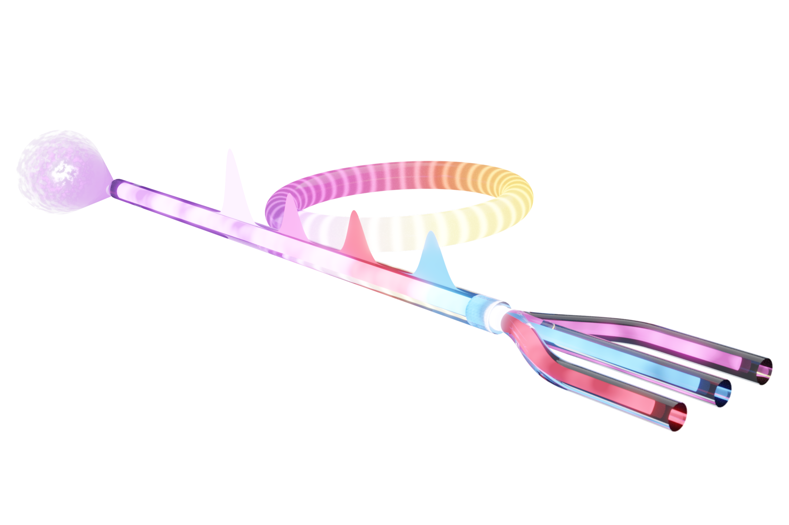
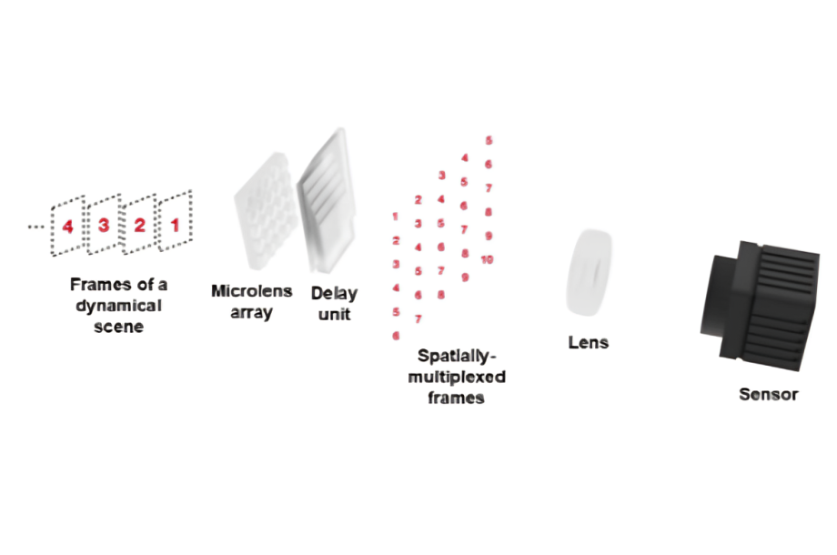

Add image
Add imageassets/research/diffractive-mmf.pngBend the fiber, steer the diagnosis
Mechanical mode-coupling control turns a multimode fiber into a trainable diffractive optical neural network. Kesgin et al., Optics Letters, 2025.
Nonlinear & ultrafast photonics · Optical computing
I’m an undergraduate researcher at Koç University’s Laboratory of Photonic Technologies. My work spans optical computing and photonic neural networks, nonlinear and ultrafast dynamics in multimode fibers, ultrafast fiber laser sources, and single-shot ultrafast imaging, with first-author work in Nanophotonics, Communications Engineering, Optics Letters, and npj Unconventional Computing, an internationally pending patent on chaos-based computing, and TÜBİTAK STAR and TÜBİTAK–MAECI research fellowships. I’m applying for PhD positions for 2027.
Education
B.Sc. Electrical & Electronics Engineering · Koç University · expected June 2027
CV last updated August 2026
 Add photo
Add photoassets/headshot.jpeg/ research
My work treats optical hardware as the computer itself: instead of simulating a neural network on a digital chip, I map the computation onto the nonlinear, spatiotemporal dynamics of light in multimode fibers and laser cavities: reservoir, diffractive, recurrent, and spiking networks realized directly in the optical domain.
Alongside the computing I build the tools that make it possible, ultrafast fiber laser sources and single-shot ultrafast imaging at up to 685 billion frames per second, and I treat complex physics like chaos, mode coupling, and rogue-wave statistics as a resource rather than a nuisance.
Areas
/ interactive studies
Each study below is paired with a small interactive simulation of the paper's core mechanism. Click “explore the interactive figure” to open one, or jump straight to the full publication list.
Add imageassets/research/diffractive-mmf.pngMechanical mode-coupling control turns a multimode fiber into a trainable diffractive optical neural network. Kesgin et al., Optics Letters, 2025.
 Add image
Add imageassets/research/spatiotemporal-chaos.pngMultimode fibers pushed to the edge of spatiotemporal chaos act as high-dimensional reservoirs for machine learning. Kesgin & Teğin, Nanophotonics, 2025.
 Add image
Add imageassets/research/chaotic-attractors.pngAn electronic substrate that computes through its own chaotic strange-attractor dynamics, the basis of a pending patent (WO2025063908A1). Kesgin & Teğin, Communications Engineering, 2024.
 Add image
Add imageassets/research/optical-snn.pngExtreme, heavy-tailed rogue-wave statistics in free-space are harnessed as an optical spiking mechanism. Kesgin et al., npj Unconventional Computing, 2026.

Add imageassets/fiber-rnn.pngLight recirculating through a passive multimode-fiber loop implements a recurrent neural network's fading memory, with no trained weights in the optical path. Eşlik, Kesgin & Teğin, Optica, under review.

Add imageassets/ultrafast-camera.pngA $500 microlens-array-and-glass rig turns a single camera exposure into a picosecond-resolved movie. Eşlik, Kesgin & Teğin, arXiv, 2026.
/ publications
Photonic neural networks at the edge of spatiotemporal chaos in multimode fibers
Nanophotonics 2025 · 14(16), 2723–2732 Link to paper
Implementing the analogous neural network using chaotic strange attractors
Communications Engineering 2024 · 3, 99 Link to paper💻 Code & Data
Fiber-based diffractive deep neural network
Optics Letters 2025 · 50, 5254–5257 Link to paper
Optical spiking neural networks via rogue-wave statistics
npj Unconventional Computing 2026 · 3, 33 Link to paper💻 Code & Data
Multimode fiber laser cavities as nonlinear optical processors
Communications Physics 2026 · accepted, in press Link to paper💻 Code & Data
Recurrent neural networks implemented through spatiotemporal light propagation in optical fibers
Optica 2026 · under review Link to manuscript💻 Code & Data
Low-cost passive single-shot ultrafast imaging at 685 Gfps
arXiv preprint 2026 Link to manuscript
Real-time surrogate modeling of nonlinear pulse evolution in multimode fibers
arXiv preprint 2025 Link to manuscript
* Equal contribution.
/ patent
Method and system for enhanced machine learning utilizing chaotic attractors. Kesgin, B. U. & Teğin, U. · International Patent (PCT) WO2025063908A1
/ selected talks
Selected from 11 presentations at SPIE Photonics West, CLEO, CLEO Europe, and FiO. See CV for the full list.
/ teaching
Teaching assistant for optics and electromagnetics at Koç University.
/ news